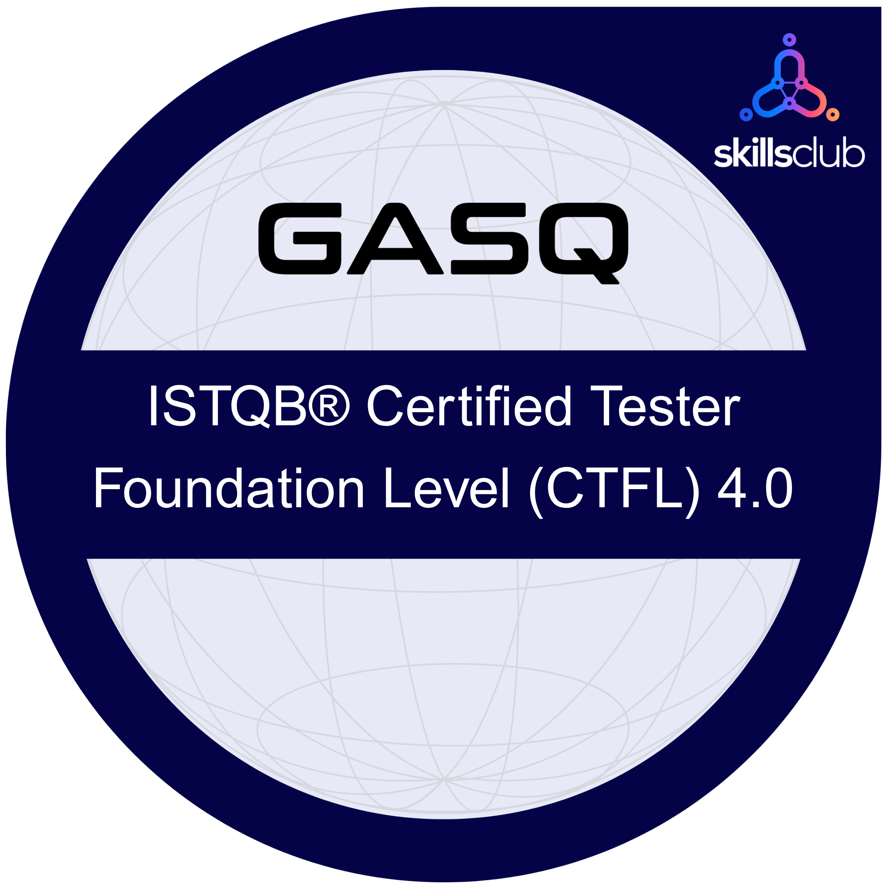

Comprendre avant de tester
Identifier les fonctionnalités critiques, les parcours utilisateurs, les règles métier et les zones à risque afin de définir un périmètre de test pertinent.
Après plusieurs années dans
l'expertise technique, le diagnostic et le contrôle qualité
chez Apple, j'oriente aujourd'hui cette expérience vers le
test logiciel et l'Assurance Qualité.
Mon approche repose sur un principe simple :
détecter avant que ça casse,
comprendre avant de corriger,
sécuriser avant de livrer.
Une continuité entre diagnostic technique, contrôle qualité et test logiciel.
Identifier les fonctionnalités critiques, les parcours utilisateurs, les règles métier et les zones à risque afin de définir un périmètre de test pertinent.
Prioriser les scénarios selon leur impact métier et rechercher les anomalies fonctionnelles, techniques, ergonomiques et de sécurité.
Reproduire, analyser les logs et les DevTools, isoler le comportement problématique et fournir des éléments exploitables aux développeurs.
Automatiser progressivement les scénarios critiques et préparer leur intégration dans une chaîne CI/CD.
Une trajectoire construite autour du diagnostic, de la qualité et de l'amélioration continue.
Audit global, technique, fonctionnel et sécurité de l'écosystème web et des API REST de l'entreprise, avec une approche orientée risques et qualité logicielle.
Première immersion professionnelle dans le test logiciel, avec conception de scénarios, exécution de tests fonctionnels et exploratoires, analyse des résultats et rédaction de rapports.
Pilotage de la stratégie Tech-Corner, accompagnement des équipes et contrôle de la conformité des processus techniques.
Expertise technique, conformité des processus, diagnostic, réparation hardware/software et contrôle qualité post-intervention.
Identification et recherche de pannes, diagnostic matériel et logiciel et proposition de solutions visant à améliorer la sécurité et les performances.
Référent B2B/B2C retail, conseil en solutions IT et accompagnement client.
Communication visuelle et photographie professionnelle sportive et événementielle.
Une montée en compétence orientée qualité logicielle et automatisation.

Niveau Fondation
ENI École Informatique · Titre RNCP Niveau V — Bac+2
Mac · iPhone · iPad · Watch · AirPods · HomePod · Apple TV · Hardware + Software
Conducteur de Transport Public Particulier de Personnes
Centre Américain de Langues · Fès, Maroc
Communication visuelle · Institut MULTIHEXA
Institut MULTIHEXA · Oujda, Maroc
Gestion Comptabilité · Lycée Technique · Oujda, Maroc
Un socle QA complété par une compréhension du développement web.
Les compétences humaines construites au contact des équipes et des utilisateurs.
Je recherche aujourd'hui un CDI dans le test logiciel / Assurance Qualité, avec l'envie de continuer à développer mes compétences en automatisation et en qualité logicielle.